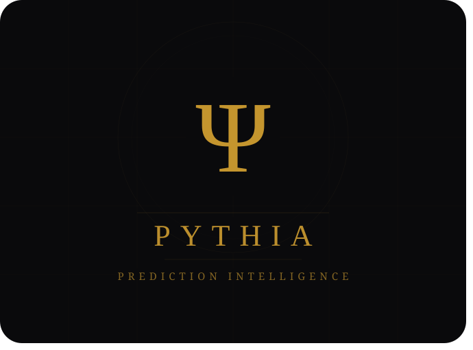

About
I am a software engineer focused on building robust, scalable infrastructure and bridging the gap between complex enterprise requirements and seamless developer experiences. Whether I am architecting cross-cloud microservices or untangling legacy code, my goal is always to deliver solutions that are both future-proof and operational on day one.
Personal Projects
-
AI / Finance Featured 
Pythia: A Kalshi-Polymarket Analyzer ↗
End-to-end autonomous trading intelligence pipeline across Kalshi and Polymarket. Scans 10,000+ live prediction markets, orchestrates sequential AI research agents to gather evidence per candidate, then runs per-ticker LLM reasoning to classify near-certain outcomes — with automated fact-checking to catch hallucinations before they reach the report.
Built with a custom multi-agent architecture: a free Owl Alpha model handles web research in parallel batches; a dedicated classifier LLM reasons about each market using injected evidence; a verification pass downgrades any CERTAIN result that fails source validation. Output is a Kelly-criterion-sized opportunity report with edge calculated after platform fees.
- Multi-Agent AI
- LLM Reasoning
- Autonomous Pipeline
- Quantitative Finance
- Python
- Kalshi
- Polymarket
-
Android App Erratic Drummer ↗
Designed, developed, and published a native Android application to the Google Play Store. Engineered the audio playback logic and user interface, managing the end-to-end lifecycle from local development through to public distribution.
- Android SDK
- Mobile Dev
- Google Play Console
Achievements
-
Hill's Pet Nutrition Feeding Calculator Multi-Market Rollout ↗
Led the technical cutover of the Feeding Calculator across 10+ international markets. Scaled the platform to 16k active feeding plans post-launch, beating the annual conversion target by 111%. Designed the architecture to decouple the app from a legacy monolith, enabling independent multi-region scaling.
- Tech Lead
- Multi-Region
- Architecture
- Micro-frontends
-
Hill's Pet Nutrition VetReco Project Stabilization ↗
Stabilized a critical project after the previous tech lead departed suddenly. Eliminated single-point-of-failure dependencies, authored onboarding documentation, and integrated SonarQube quality gates and Sentry cross-service tracing — cutting emergency escalations by ~80% and enabling any engineer to handle production deployments.
- Tech Lead
- SonarQube
- Sentry
- Incident Response
-
B2B Ecom Local Micro-Frontend Proxy ↗
Engineered a local reverse proxy using Nginx to unify disparate micro-frontends during development. Configured port mapping and route-based proxying, enabling developers to traverse the entire ecosystem on a single domain and eliminating complex local setup overhead.
- Nginx
- Micro-frontends
- Reverse Proxy
-
Cloud & Integration SAP to Azure Secure Data Pipeline ↗
Developed a Node.js/Express microservice on GCP to establish a secure file upload pipeline between SAP ABAP and Azure Blob Storage. Engineered the flow to process multipart/form-data via Multer, implemented secure credential retrieval from Hashicorp Vault, and managed cross-cloud streaming.
- Node.js
- GCP
- Azure Blob
- Hashicorp Vault
-
HTH 2.0 Next-Generation Stack Assessment ↗
Authored a comprehensive Architectural Decision Record (ADR) to establish a future-proof, React-based technology stack for the upcoming HTH 2.0 project. Evaluated frameworks, state management, and build tools against enterprise requirements to mitigate risk and ensure scalability.
- React
- Next.js
- Architecture